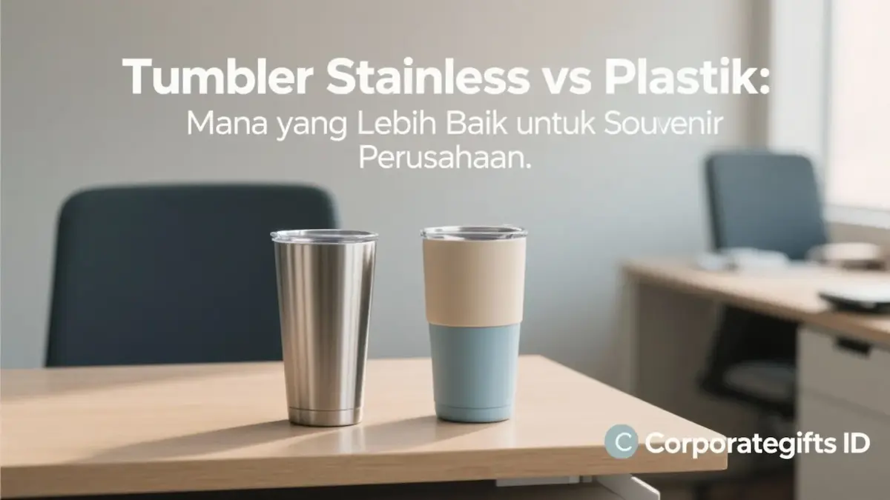

Corporate Gifts ID - Dalam memilih tumbler stainless vs plastik untuk souvenir kantor, tumbler stainless steel terbukti lebih unggul dalam menghadirkan durabilitas fisik jangka panjang, isolasi suhu panas maupun dingin hingga 6-12 jam, serta citra prestise korporat yang mewah. Di sisi lain, tumbler plastik bersertifikasi BPA-free menjadi opsi yang sangat efektif untuk penyelenggaraan event massal berskala ratusan hingga ribuan peserta, kampanye promosi lapangan, dan konsep visual dinamis penuh warna (full-color printing) dengan alokasi anggaran yang lebih ekonomis.
Sebagai salah satu komoditas teratas dalam tren souvenir kantor kekinian, botol minum dan tumbler kustom memberikan paparan merek () berulang setiap harinya di meja kerja, ruang pertemuan, hingga pusat kebugaran. Namun, keputusan menentukan material dasar bukan semata-mata kalkulasi harga per unit, melainkan menyangkut standar keamanan pangan (), keselarasan program keberlanjutan lingkungan (ESG/CSR), serta citra profesional yang hendak diproyeksikan perusahaan Anda ke hadapan audiens.
Poin Kunci Komparasi Material Tumbler Kantor:
- Performa Isolasi Suhu: Stainless steel mengandalkan struktur dinding ganda hampa udara (double wall vacuum) untuk menahan suhu es atau air panas, sedangkan plastik memiliki kemampuan retensi suhu yang sangat terbatas.
- Ketahanan Fisik & Umur Pakai: Baja nirkarat tahan terhadap benturan keras dan korosi asam minuman, sementara plastik rentan terhadap goresan fisik seiring frekuensi pencucian.
- Teknik Visualisasi Merek: Stainless steel sangat elegan dengan sentuhan ukiran laser grafir permanen, sedangkan plastik unggul dalam variasi warna bodi dan sablon grafis warna-warni.
- Sasaran Distribusi: Alokasikan tumbler stainless steel untuk jajaran eksekutif, dewan komisaris, dan mitra strategis, serta tumbler plastik untuk peserta seminar akbar dan kegiatan luar ruang (outdoor gathering).
Tumbler Stainless Steel: Pilihan Premium dengan Durabilitas Maksimal
Tumbler stainless steel standar industri umumnya diproduksi menggunakan paduan logam food-grade tipe SUS304 (mengandung 18% kromium dan 8% nikel) atau SUS316 untuk resistensi kimia yang lebih tinggi. Material ini menjadi standar emas bagi perusahaan yang menempatkan kesempurnaan mutu sebagai prioritas utama.
1. Isolasi Suhu Panas dan Dingin Lebih Lama
Keunggulan paling didambakan dari botol stainless steel adalah rancang bangun isolasi vakum ganda (). Ruang hampa di antara dua dinding logam mencegah terjadinya transfer panas secara konduksi maupun konveksi, menjaga kopi panas tetap nikmat hingga 8 jam dan air es segar dingin hingga 12-24 jam tanpa menimbulkan kondensasi embun basah di permukaan luar.
2. Umur Pakai Bertahun-tahun dan Tahan Banting
Baja tahan karat tidak mudah retak atau pecah saat terjatuh dari meja kantor. Daya tahan fisik yang kokoh ini memberikan manfaat promosi jangka panjang bagi pengiklan, karena cenderamata Anda akan terus dipakai berulang kali selama 3 hingga 5 tahun ke depan.
3. Citra Prestise Eksekutif Melalui Grafir Laser
Finishing permukaan bodi tumbler stainless steel, baik berlapis cat doff () maupun kilau metalik, memancarkan kesan mewah dan profesional. Logo perusahaan yang diaplikasikan menggunakan teknologi sinar laser presisi menghasilkan ukiran permanen yang mengikis lapisan cat luar, menyingkap kilau logam asli yang tidak akan pernah luntur meskipun dicuci setiap hari.
4. Ramah Lingkungan dan Mendukung Pilar Keberlanjutan CSR
Bahan baja nirkarat adalah salah satu material yang 100% dapat didaur ulang tanpa menurunkan kualitas materialnya. Mengganti konsumsi botol plastik sekali pakai dengan tumbler stainless steel secara langsung mendukung laporan keberlanjutan dan kepatuhan program lingkungan perusahaan Anda.
Tumbler Plastik BPA-Free: Solusi Ringan, Variatif, dan Ekonomis
Di sisi lain, tumbler plastik modern telah mengalami transformasi teknologi material yang signifikan. Penggunaan plastik generasi baru menghadirkan opsi praktis untuk kebutuhan branding bervolume masif.
1. Desain Ergonomis dan Ragam Warna Cerah
Material polimer seperti Tritan kopoliester atau PP food-grade memungkinkan pencetakan bodi botol dengan aneka bentuk unik, transparansi kristal bening, maupun warna-warni cerah yang selaras dengan palet warna korporat. Permukaannya yang rata sangat ideal untuk aplikasi teknik cetak padat () maupun sablon UV putar () multi-warna.
2. Bobot Ringan dan Kenyamanan Mobilitas Tinggi
Bobotnya yang sangat ringan membuat tumbler plastik menjadi teman perjalanan yang sangat disukai untuk aktivitas olahraga santai, kegiatan outbound luar ruangan, atau dibawa oleh mahasiswa dan pelajar di dalam ransel mereka.
3. Jaminan Keamanan Bebas Senyawa BPA (BPA-Free)
Pastikan vendor Anda hanya menggunakan biji plastik berstandardan telah mengantongi sertifikat(bebas senyawa kimia Bisphenol A) agar tidak menimbulkan risiko migrasi zat beracun ke dalam air minum saat terkena paparan sinar matahari langsung.

Variasi bentuk, metode tutup sedotan atau ulir, dan teknik penempatan logo disesuaikan dengan kebutuhan segmentasi tamu perusahaan.
Tabel Perbandingan Lengkap: Stainless Steel vs Plastik
Berikut matriks evaluasi perbandingan komprehensif antara kedua material drinkware promosi terpopuler:
| Parameter Evaluasi | Tumbler Stainless Steel (SUS304 / SUS316) | Tumbler Plastik (BPA-Free Tritan / PP) |
|---|---|---|
| Rentang Harga Satuan | Menengah hingga Premium (Rp45.000 - Rp150.000+) | Ekonomis hingga Menengah (Rp15.000 - Rp45.000) |
| Retensi Suhu Air | Sangat Baik (Tahan panas/dingin 6-12 jam dengan dinding vakum ganda) | Sangat Terbatas (Cepat menyamakan suhu dengan udara sekitar) |
| Ketahanan Fisik (Durabilitas) | Sangat Tinggi (Anti karat, tahan benturan dan aus pakai) | Sedang (Bisa tergores atau kusam seiring siklus pencucian) |
| Bobot Produk | Relatif lebih berbobot (Memberi impresi kokoh dan mewah) | Sangat ringan dan praktis dibawa bepergian |
| Teknik Kustomisasi Logo | Laser Engraving presisi, UV DTF Print, atau Pad Print | Sablon Manual Multi-Warna, Rotary UV Full Color, atau Insert Paper |
| Dampak Keberlanjutan Lingkungan | Sangat Tinggi (Siklus hidup bertahun-tahun, mudah didaur ulang murni) | Baik (Mendukung pengurangan botol sekali pakai, asalkan didaur ulang terpilah) |
| Target Distribusi Optimal | Klien VIP, jajaran direksi, hadiah akhir tahun, onboarding kit tetap | Peserta seminar umum, pameran expo B2C, event olahraga santai, hadiah promosi massal |
Kapan Waktu Tepat Memilih Stainless Steel atau Plastik?
Agar investasi anggaran suvenir perusahaan Anda memberikan imbal hasil optimal, ikuti panduan kurasi berikut:
- Kemitraan Strategis dan Klien Eksekutif: Selalu pilih tumbler stainless steel model vakum berkapasitas 500ml dengan balutan ukiran laser grafir logo elegan. Kemas di dalam kotak hardbox bermagnet eksklusif untuk menciptakan penghormatan berkelas.
- Apresiasi Internal Karyawan dan Onboarding Kit: Tumbler stainless steel menjadi pilihan paling fungsional karena mendukung kebiasaan minum teh atau kopi hangat karyawan sepanjang jam kerja kantor.
- Seminar Kit Akbar dan Pameran Publik: Manfaatkan tumbler plastik Tritan bening berlogo cetak warna-warni untuk mengoptimalkan efisiensi biaya pengadaan tanpa mengorbankan nilai estetika barang.
- Paket Souvenir Akhir Tahun dan Tahun Baru: Menjelang momentum tutup tahun, kurasi tumbler stainless steel dalam bingkisan paket bersama agenda kulit dan pulpen logam memberikan kesan penutupan tahun yang berbobot.
Pertanyaan Seputar Pemilihan Bahan Tumbler Terbaik (FAQ)
Kesimpulan dan Solusi Pembuatan Souvenir Tumbler di CorporateGifts.ID
Keputusan memilih tumbler stainless vs plastik kembali berakar pada tujuan strategis komunikasi dan besaran anggaran perusahaan. Jika fokus utama Anda adalah membangun prestise jangka panjang, mengapresiasi mitra VIP, dan mengoptimalkan retensi suhu minuman, tumbler stainless steel adalah pilihan mutlak. Namun jika efisiensi bujet pada volume pengadaan ribuan unit dengan visual warna ceria yang Anda kejar, tumbler plastik BPA-free adalah solusi tepat guna.
Konsultasikan rancangan souvenir tumbler berlogo institusi Anda bersama tim profesional CorporateGifts.ID. Kami menghadirkan aneka pilihan tumbler berkualitas tinggi siap kustom grafir laser maupun UV print, dukungan pratinjau mockup grafis cuma-cuma, serta garansi mutu produk untuk pesanan ke seluruh Indonesia.

Ditulis oleh: Arinda Zakia
Senior Corporate Gifting SpecialistSpesialis pengadaan suvenir korporat dan kurator merchandise eksekutif di CorporateGifts.ID. Berpengalaman lebih dari 9 tahun mendampingi divisi Procurement dan Marketing Communication di berbagai perusahaan multinasional dalam memilih produk cinderamata fungsional yang memberikan dampak branding maksimal.
Lihat Profil Lengkap & Panduan Lainnya